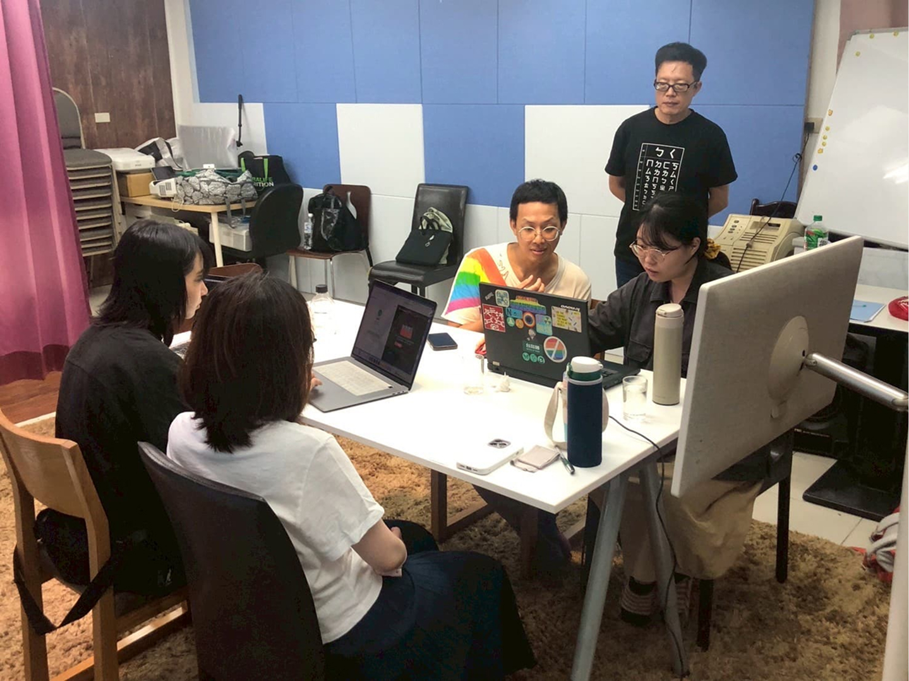
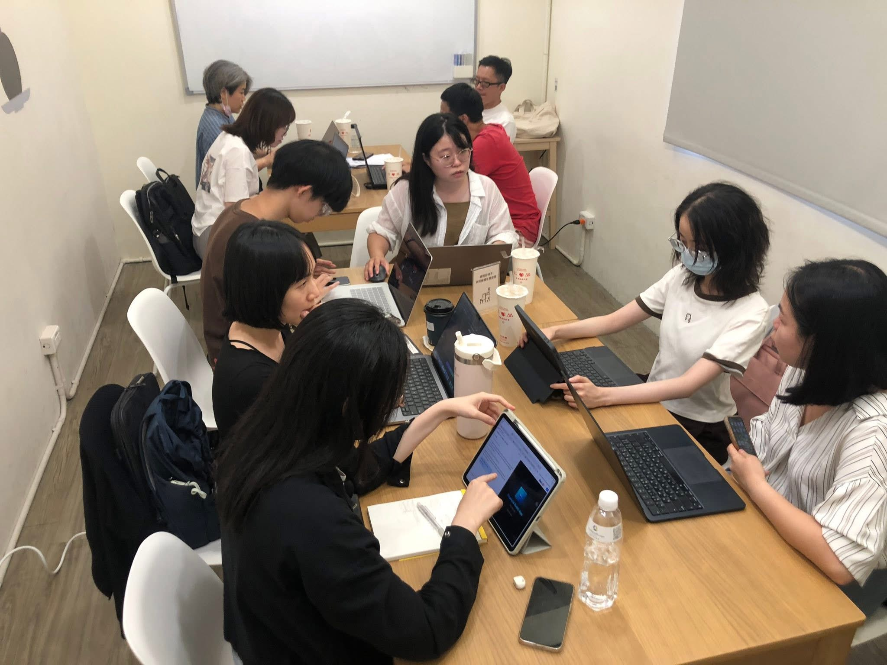

金融 Web3 數位身份驗證
FIDO × NFT｜B2B2C 概念驗證
結合 NFT 與 FIDO 技術，打造新世代去中心化金融身分驗證機制 —「你的身分，你掌握，安全、隱私、不可偽造」。
Side Project

專案起源
實體銀行有「安心感」錨點，但人們對於數位世界的使用依然有著不安和疑慮存在。在這樣的機制環境下，再加一道 NFT 數位驗證提升安全性。
這次以 Side Project 形式與「數位身分股份有限公司」合作，目標是用 UX 驗證方法找出 FIDO + NFT 雙重身份驗證的真實採用阻礙，並以銀行金融單位為案例製作原型設計。
核心挑戰
成果與量化指標
- 一鍵式登入便利性
- 低門檻上手
- 登入前安全／法規說明
- 部分遮蔽的身份摘要
- 分享 APP 意願
- 日常採用意願
產品開發與價值驗證流程
市場現況
初步訪談洞察
形成假設
原型開發
原型 POC 驗證
A/B 測試架構
A/B 測試
市場研究與洞察
整理市場資料並對 12 位受訪者進行初次訪談，挖掘出金融產品登入與 NFT 的幾大痛點：
1. 追求極速與直覺
OTP、Face ID 已成主流，受訪者偏好最小化登入步驟，追求「極速且無感」的體驗。
2. 認知分化與安全障礙
用戶對 NFT 驗證存在極大認知落差。由於理解不足產生顯著的安全疑慮，成為採用的主要障礙。
3. 對學習成本的抗拒
用戶表現出對強制引導的抗拒，約 20% 會略過操作引導、10% 厭惡強制性彈窗教學，反映新技術導入必須具備極低的學習門檻。
4. 信任錨點
用戶傾向慣用的金融軟體（薪轉戶），且高度依賴「真人客服」的效率，反映了自動化服務在複雜技術應用中的侷限。


原型 POC 驗證
AI 輔助應用：利用 Lovable AI 生成動態原型，並設計雙原型驗證兩種對立假設。
原型驗證結果
在第一階段的原型驗證中，透過質化訪談獲得了顛覆性的洞察，找出核心斷點：
原型 A・未如預期
過多法規說明與確認讓用戶感到不耐，擔心日常登入變麻煩；專業感未有效轉化為信任感。
原型 B・部分達成
流程可順暢完成，資訊可選擇性閱讀。但用戶仍不清楚「比原本多了什麼價值」；視覺回饋有效但動機仍不足。
行為學 Com-B 模型分析
能力
機會
動機
Capability｜能力
我們發現使用者並非無法理解或操作 FIDO / NFT 流程，原型驗證中，使用者普遍能順暢完成雙重身份驗證。需要解決的是如何讓使用者在不閱讀大量說明的情況下，理解自己完成的是更高層級的金融身份確認，而不只是多一個登入步驟。
- 受訪者對於 NFT 有大概認知
- 原型測試可順暢完成流程
- 關鍵在於快速理解「比原本登入多了什麼價值」
Opportunity｜機會
銀行 App 本身提供了高度信任基礎，是推動 FIDO / NFT 雙重驗證的重要場域優勢。然而，登入流程並不是適合承載大量教育內容的場景。原型驗證顯示，過多法規說明與確認關卡會讓使用者感到不耐，甚至擔心未來日常登入會變得麻煩。因此設計重點應放在「低干擾導入」，而不是「高密度解釋」。
- 銀行 App 本身具備安全信任基礎
- 登入情境高頻、低耐心
- 過多法規說明與確認關卡，會降低接受度
Motivation｜動機
我們發現「安全」並不是無效價值，而是單獨作為賣點時不夠強。因為銀行本身已經被使用者視為相對安全的場域，過多 NFT 技術說明並沒有明顯提升信任感與使用意願。使用者更在意雙重身份驗證和原本登入相比，究竟多了什麼實際保障與使用價值。
- 單純強調安全，吸引力有限
- 過多 NFT 說明，未明顯提升信任與意願
- 需感受到原本登入沒有的身份價值與保障
產品策略轉向・創造新用戶價值
銀行對於用戶來說安全是基本，因此我們決定利用 NFT 不可串改複製的特性，提供『NFT 身份象徵』。
社群成就系統・解鎖與展示機制
用戶完成雙重驗證後，即可解鎖特定勳章或稱號。利用同儕效應引發社群與炫耀心理，將單點的驗證行為轉化為網狀的用戶增長路徑。
情感身份連結・個性化 NFT 頭像
強化「專屬感」與「歸屬感」。讓用戶在數位金融世界中的身份化身（Avatar），從而建立深度的情感聯繫。
差異化體驗・從「完成任務」到「獲得獎勵」
進入首頁後，可以看到「NFT 鑄造成功的個人頭像展示」。給予用戶強烈的正向回饋，解決 NFT 導入後「用戶無感」問題。
保密信任感・部分身份資料隱蔽
在登入頁面的個人資料部分隱蔽，給予用戶有個資保密的信任感。
A/B Testing 比較表・成就與身份系統
第二階段驗證 — 以原型 B（效率驅動）為基礎，加入情感化身份機制，驗證是否能提升採用動機。
A/B Testing 研究洞察・量化問卷 ＋ 質化訪談
產品定位轉向・從「可交易資產」轉為「數位身份 VIP 憑證」
我們將 NFT 的定位除了身份驗證外，從「金融資產」Pivot 為「數位身份 VIP 憑證」。數據佐證：用戶對於專屬 NFT 頭像有興趣表現不錯（7 分）。
推翻 NFT 頭像轉讓交易
原本假設用戶對於「個人 NFT 頭像資產」交易與搜集有吸引力，但數據（可轉讓性僅 4.5 分）顯示，在嚴謹的金融場景中，用戶對販售自己的身份憑證興趣不高。
契合金融產業：銀行最擔心就是合規風險與身份盜用。不可轉讓的 NFT，完美契合金融業的反洗錢（AML）與實名制（KYC）需求。
- 一鍵式登入便利性
- 低門檻上手
- 登入前安全／法規說明
- 部分遮蔽的身份摘要
- 分享 APP 意願
- 日常採用意願
專案總結
- 從「基礎安全」到「情緒溢價」：本次專案驗證了光靠「更安全」不足以驅動轉化，必須透過其他設計提供新商業價值（如數位身份 VIP 憑證）進而獲得推動用戶轉化的機會點。
- 測試樣本侷限性：初期訪談集中於 25–35 歲的高數位參與度受訪者。未來計畫針對 50 歲以上的中高齡用戶進行測試，探討「免學習、無感化」技術在克服數位落差上的實際成效。
後續研究方向
- 帳戶恢復機制：NFT 存在鏈上，FIDO 只是鑰匙。我們會研議「社交恢復」方案，確保用戶換手機或裝置遺失時，身分與頭像能跟著走。
- 包容性設計：對於沒有生物辨識的舊裝置，應保留傳統 OTP 或密碼作為退路，不能因為追求新技術而擋掉 10% 的老舊設備用戶。